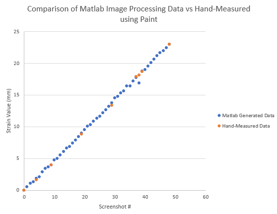
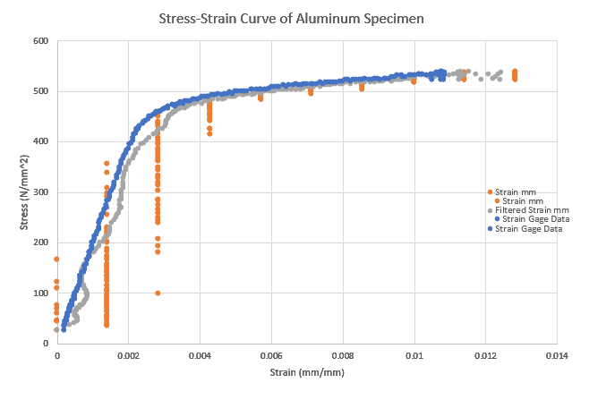

Characterization of Cyclic Behavior of Materials for Morphing Application
Through my Summer 2018 research internship at the Aoki and Yokozeki Laboratory, I was asked to characterize two different types of materials for their potential application as skin for Dr. Yokozeki's morphing wing.
Since conventional strain gauges were too stiff to measure these low modulus materials, I proposed then developed a custom image processing method that would track engineering strain using pixel numbers.
For recording the experiments, a Dino-Lite Edge 5MP AM7515 Series was carefully pointed directly at the specimen. Video footage were saved as video files (WMP files) in RGB24 format at 10 frames per second on the desktop that powered the DINO camera via USB. Using MATLAB, frames were extracted at certain intervals.
The optical strain detection method developed relied heavily on MATLAB's image processing toolbox. Functions such as color filters, brightness adjustments, and edge detection were used to isolate the white markers drawn on the specimen. This was necessary for the algorithm to measure the distance between the two lines and track changes. Once strain measurements were obtained, the Savitzky-Golay filter was used to smooth the curve.
For validating the algorithm's accuracy, the data obtained by MATLAB was compared to data measured manually using a pixel distance measuring tool found in MSPaint.exe. A similar tensile experiment was also conducted on a steel specimen and measurements results were compared to ones obtained concurently by a strain gauge. The comparison are shown below.

Verification of Algorithm by Manually Obtained Data
